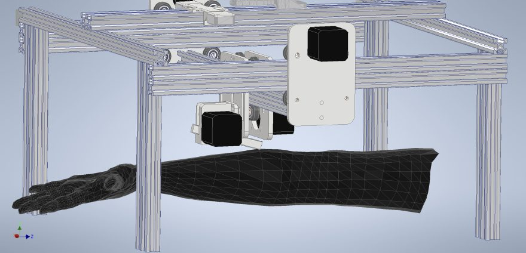
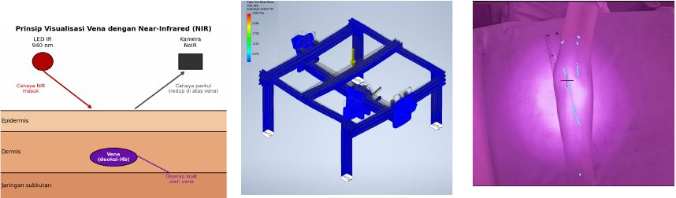
01 · Final-year project · 2026
GUNGNIR
Needle guidance from stereo near-infrared vein detection
Drawing blood often fails because the vein is hard to find. Existing vein finders only project a flat image and leave depth to the operator's hand. GUNGNIR finds the vein with a camera and then moves a gantry to point the needle at it.
I built the detection pipeline, designed the gantry, and tuned its controller.
Measured
| Pipeline time | about 724 ms per image on a Raspberry Pi 5, across 10 test images |
|---|---|
| Model size | 9 MB to 2.4 MB after INT8 quantization, IoU drop of 0.002 |
| Positioning | steady-state error under 0.01 mm in simulation |
| Settling time | under 1.5 s in simulation |
How it works
- U-Net with a MobileNetV2 encoder segments the vein, followed by CLAHE, Hessian ridge detection and skeletonization to pick the injection point.
- Four NEMA 17 steppers drive the gantry through inverse and forward kinematics with an overdamped PID controller.
- The frame was checked with stress analysis in Autodesk Inventor before building.
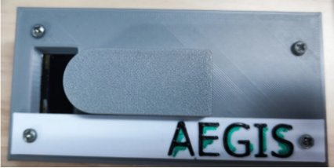
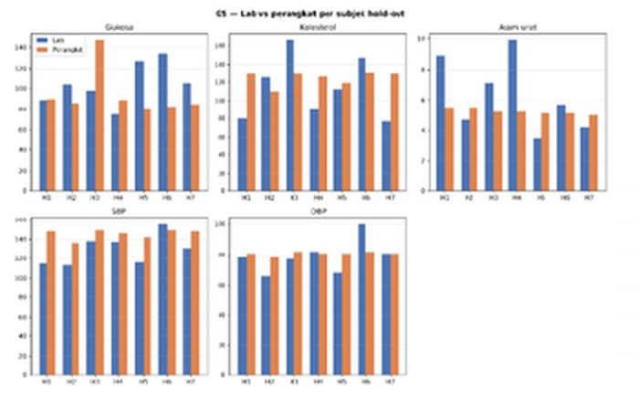
02 · BRIN final project · 2025–2026
AEGIS
Checking blood sugar, uric acid and cholesterol without a needle
Routine checks for diabetes and similar conditions mean drawing blood. AEGIS estimates these values from infrared light passed through a fingertip instead. It is a screening prototype, not a clinical test.
I designed and built the physical system: the enclosure, the sensor mounting and the device hardware. The estimation research was led by Carissa Aurelia Adeline.
Measured
| Glucose | mean error 28.6 mg/dL on hold-out data |
|---|---|
| Blood pressure | mean error 17.9 mmHg systolic, 7.4 mmHg diastolic |
| Subjects | 50, with leave-one-subject-out checks |
| Uric acid | estimates still less accurate |
Build
- ESP32 with an infrared and red PPG sensor in a 3D-printed housing.
- The readings feed an AutoML estimation pipeline calibrated in the field.
03 · BRIN AIDeaNation 2025 finalist · team of three
AMeC-OReg check-up station
The physical station for a self-service medical check-up system
AMeC-OReg is a self-service station where patients register, have vital signs taken, and get an AI-assisted first assessment before seeing a doctor. I designed and built the physical station that houses the registration screen and the measuring devices. The decision engine it connects to, built by Jonathan Edwards Telaumbanua, reached 89% triage accuracy across 1,662 patients and connected end to end in every test. The project was a finalist at BRIN AIDeaNation 2025 at the InaRI Expo.
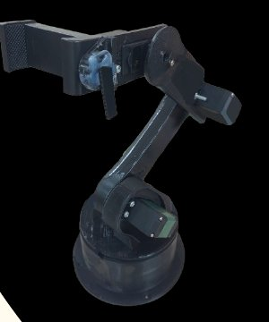
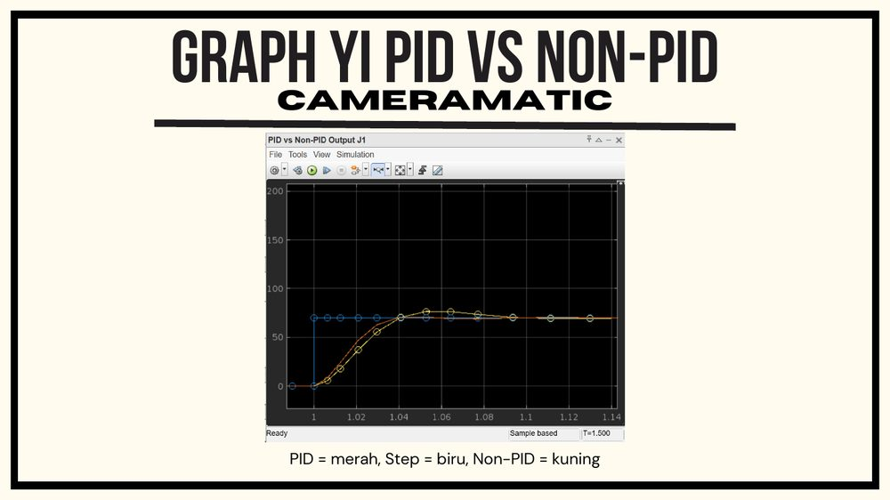
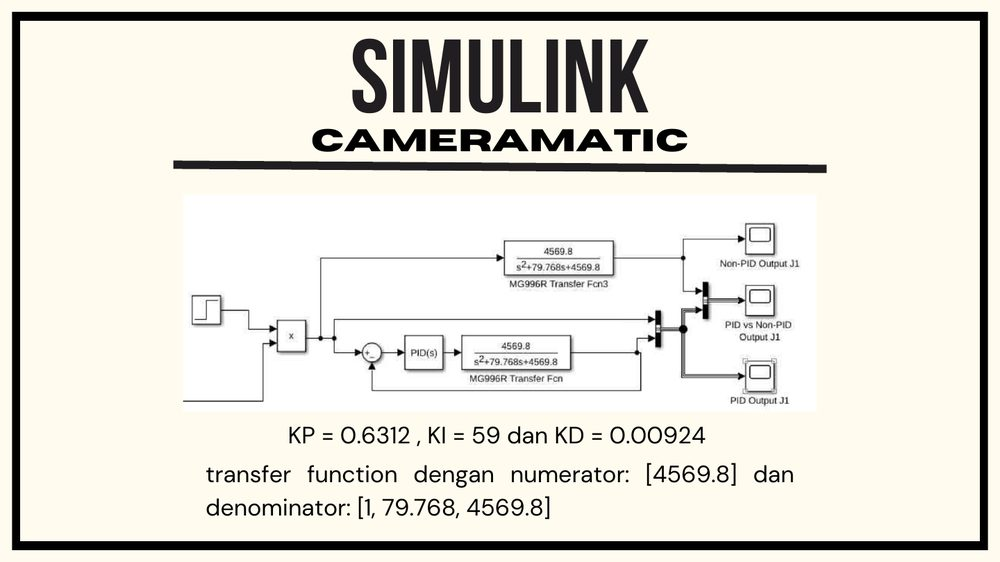
04 · Team of four · 2025
Cameramatic
A camera arm that follows the person it is filming
Solo creators usually need a second person to aim the camera. Cameramatic detects a face and turns the arm to keep it centred, so one person can film alone.
Build
| Controller | ESP32 |
|---|---|
| Vision | ESP32-CAM face detection |
| Actuators | 4 MG995 servos: base rotation, two arm joints, holder tilt |
| Travel limit | potentiometer on the joint |
| PID gains | Kp 0.6312, Ki 59, Kd 0.00924 |
How it works
- The camera reports how far the face is from the centre of the frame in pixels; the arm moves X, then Y, until the error is zero.
- Each servo was modelled as a second-order transfer function in Simulink and tuned there before the gains went on the hardware.
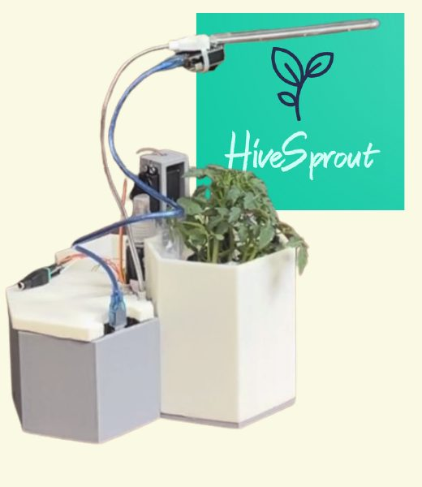
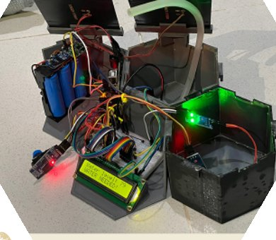
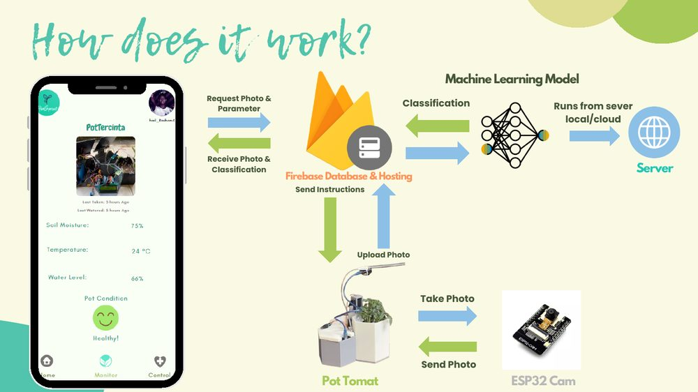
05 · Team project · 2023–2025
HiveSprout
A modular smart pot that waters itself and checks leaf health
HiveSprout began as a solar-powered pot that waters a plant from soil-moisture and water-level readings, then sleeps to save power. Over three iterations it became a product concept with a phone app, a business model, and a camera that spots tomato leaf disease and triggers a fungicide spray.
Measured
| Leaf classifier | 76.1% accuracy across 5 classes, voting ensemble |
|---|---|
| Single models | neural network 76.7%, logistic regression 67.4% |
| Energy | sleep mode designed for up to 15% lower use |
| Spray rule | once a day when a leaf is classified as diseased |
How it works
- Hexagonal modules join like honeycomb, so pots can be added or rearranged.
- Leaf photos are converted to greyscale and described with HOG features, then classified by an SVM, a logistic regression and a neural network that vote.
- Status is pushed to the app through Firebase.
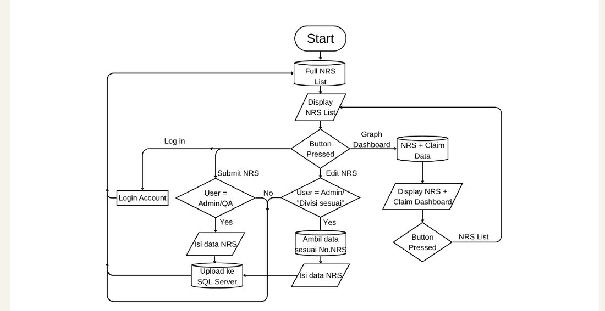
06 · Internship, Omron Manufacturing Indonesia · Feb–May 2025
NRS digital form
Replacing a paper quality form with a web app and dashboard
The quality assurance team tracked Non-Conformity Returned Sheets on paper. Sheets went missing and deadlines were hard to follow. I designed and built a web application that takes the form online and shows which sheets need attention.
Build
| Stack | PHP, Bootstrap, SQL Server, hosted on site |
|---|---|
| Data | about 40 columns in the main table |
| Deadline | 5 working days, skipping weekends and holidays |
| Access | Admin, QA and Production roles; hashed passwords |
| Schedule | 16 weeks from requirements to feedback |
How it works
- The sheet number is generated automatically and product fields fill in from the manufacturing order number.
- Each row is coloured by status: new, near deadline, overdue, or closed.
- A dashboard charts sheets by product and month, and by problem type per financial year.
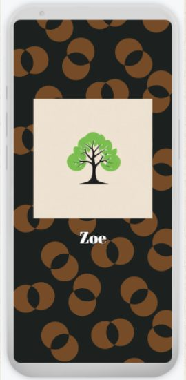
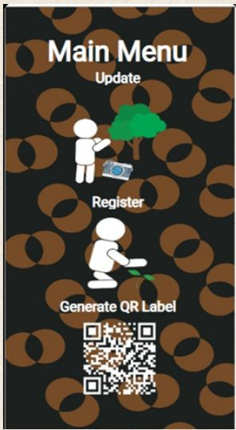
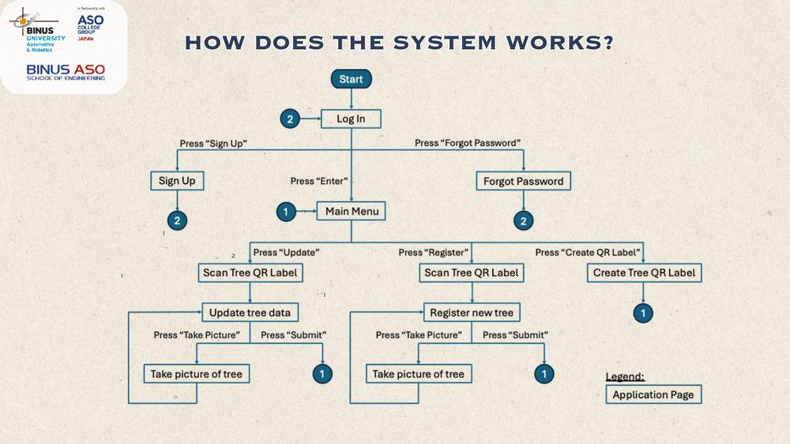
07 · Team of six · 2024
Zoe tree monitor
An Android app for tracking donated trees on the Cisadane riverbank
BINUS University planted 50 Kiray trees in June 2024 to hold the riverbank against erosion, and half survived the first two months. Zoe gives each tree a QR label so volunteers can record its height and a photo over time. The project was funded by a BINUS community empowerment grant.
Build
| Platform | Android, built with Kodular |
|---|---|
| Storage | Firebase Realtime Database, with a timestamped history per tree |
| Tree ID | generated QR label, scanned to register or update |
| Public view | web page listing each tree, donor, height and photo |
| Status | working prototype, not yet field-tested |